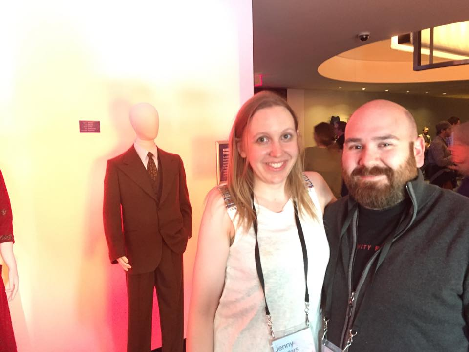
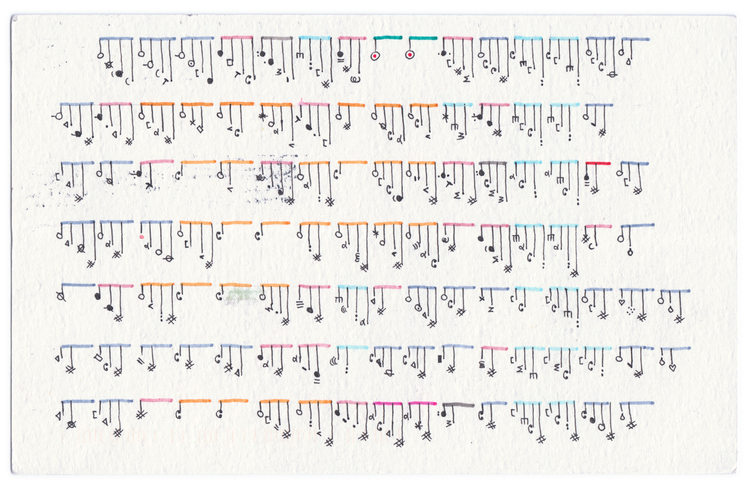
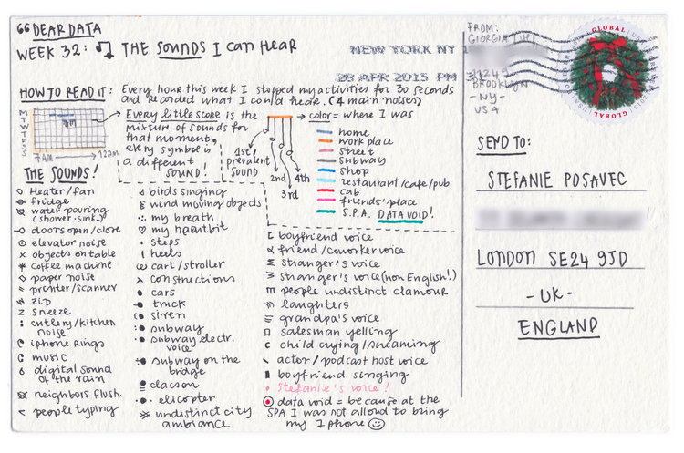
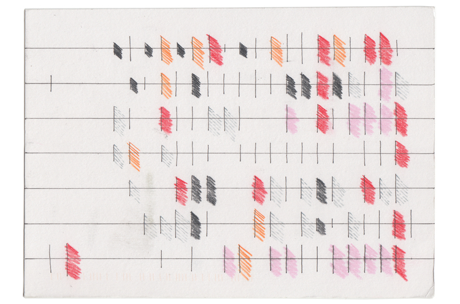
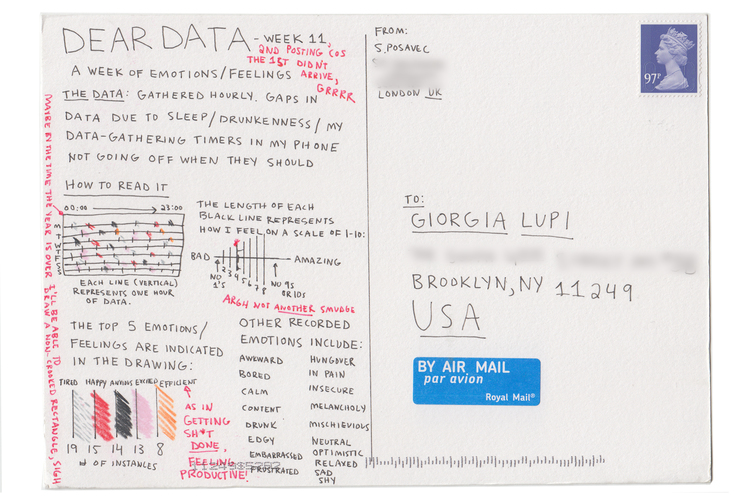

Eyeo Festival
June 1-4 2015

D3 Workshop
Scott Murray
Tutorials
Scatterplot demo
Dear Data
"Dear Data is a year-long, analog data drawing project"
Week of sounds

Week of sounds

Week of emotions

Week of emotions

Dear Data Video
New York Times
Amanda Cox
You Draw It
Budget Proposal
NYT Video
Connected Worlds
Design I/O
Video
The other stuff
weird art!
Processing.js
Casey Reas
Zach Lieberman
Local Projects